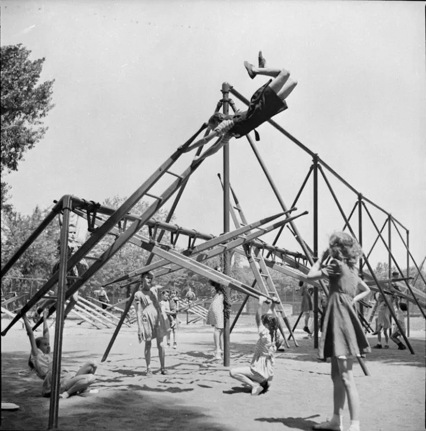
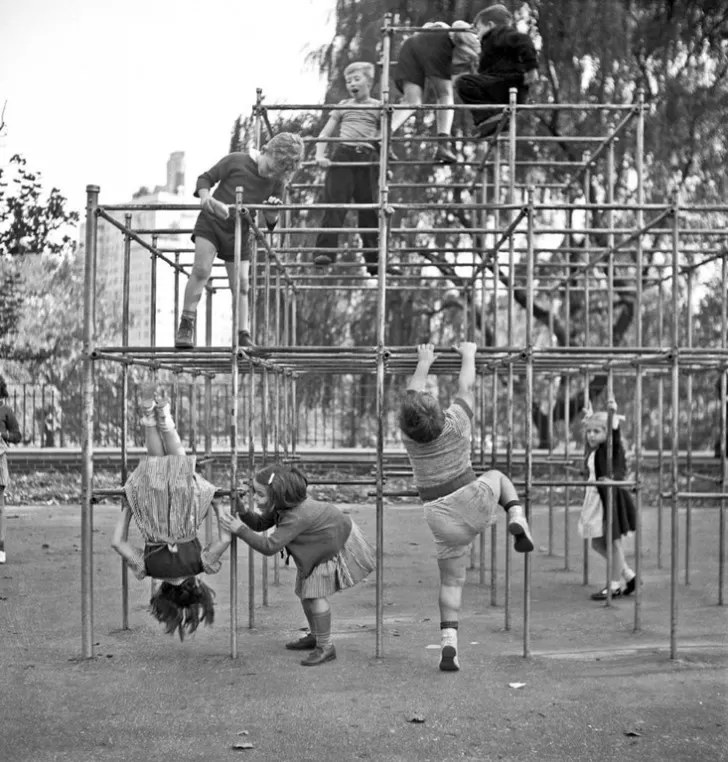
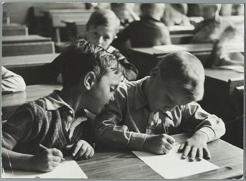
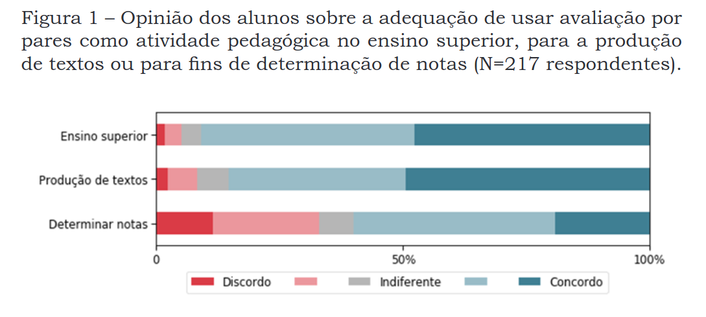
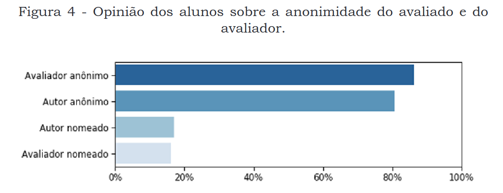
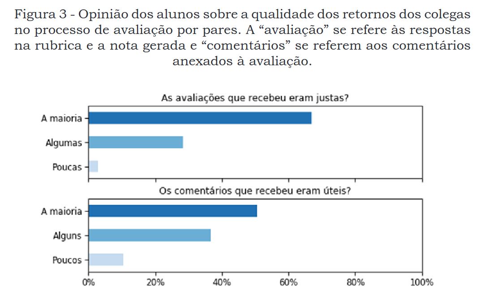
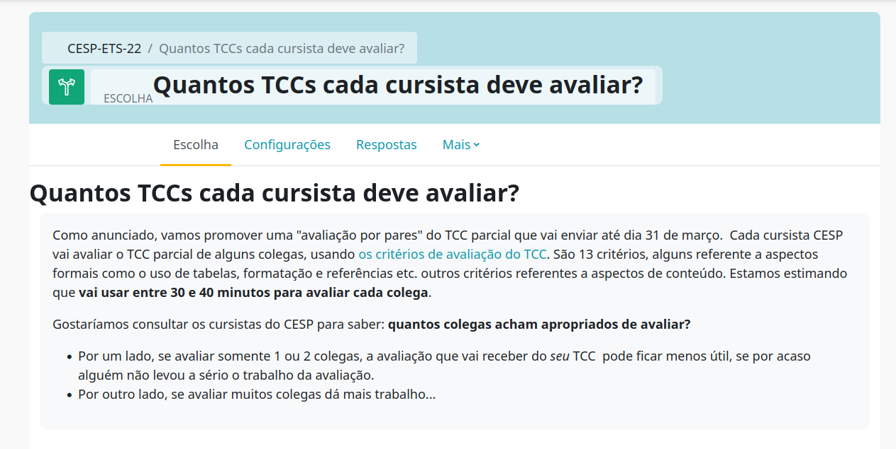
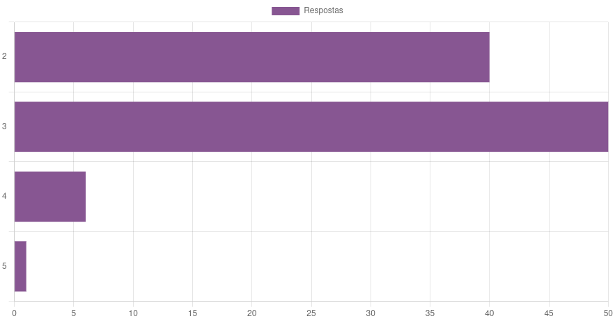
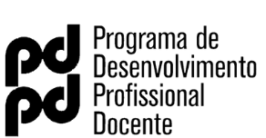

Instituto de Física da USP
Perguntas essencais:



😱
Uma optativa graduação, trabalhar com escrita, turmas de 200-300 alunos

Alguns comentários:
Incomoda-me muito ter minha nota nessa parte da disciplina determinada por colegas. Há um grande número de alunos inscritos e, provavelmente, nem todos estarão participando com a mesma seriedade nesse momento avaliativo (Estudante anônimo).
Eu gostei do processo de avaliação por pares, mas gostaria que houvesse também uma avaliação por professor, especialmente no caso da versão final do texto. (Estudante anônimo)


Um comentário:
[…] acho que os comentários dos avaliadores são essenciais, tanto quanto a avaliação objetiva. As notas dadas na avaliação devem ser justificadas por meio dos comentários, para que o autor possa entender exatamente a avaliação e aperfeiçoar o trabalho. Isso gera uma autoavaliação inclusive do próprio avaliador. Se ele dá uma nota ruim vejo que ele deva explicar o porquê, bem como se der uma nota boa saber destacar os pontos positivos e o que pode melhorar, se for o caso. - Estudante anônimo
Um curso de especialização, 120 participantes, construção cumulativa da TCC (em 3 etapas, com avaliação por pares)
Perguntamos quantos TCCs cada um poderia avaliar.


Uma disciplina para ingressantes na licenciatura em Física e Matemática. Cinco turmas de 50 alunos.
A atividade de uma turma de 2023 A atividade de uma turma de 2024 (destaque para o processo de revisão dos retornos)
Principais palpites:
(fazer um teste, sem pedir notas, só comentários)
Discussão ou comentários? 🔥
Seguimos para uma demonstração prática: se inscreva aqui e siga as orientações.
Em ordem de legitimidade acadêmica:

Ewout ter Haar | ewout@usp.br | Semana Pedagógica 2025
{kind=link}
{kind=link}